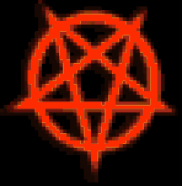

Lurk: Snarkadric Cube
Can be Inserted into Socketed Dapps
Unique Socketed Artifact: Insert Snark Runes (Groth, SnarkPack) to increase effectiveness
Non-Interactive Verification: 17% Mana stolen per hit
Invisibility - +200% to Maximum Cloak
Coercion-Resistance: +85% Resist to Centralized Entity Attacks
(let (
;; square the value of x
(square (lambda (x) (
* x x)))
;; cube the value of x
(cube (lambda (x) (
* x (* x x)))))
;; product of square and cube
(*(square 8)(cube 8)))output goes here